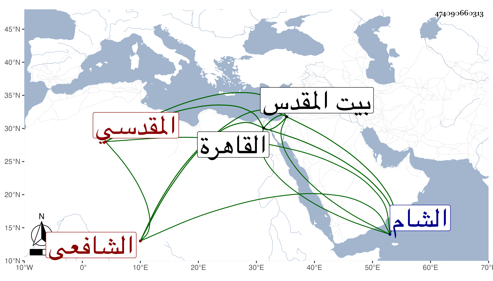

0902Sakhawi.DawLamic.ITO20230111-ara1.EIS1600.474090660313
Biography ID: 474090660313
470
أبو مساعد محمد بن عبد الوهاب بن خليل بن غازي المقدسي الشافعي ولد سنة تسع عشرة وثمانمائة ببيت المقدس ونشأ بها فقرأ القرآن وجوده على الشمس القباقبي وأبي القسم النويري وحفظ التنبيه وألفية النحو والشمسية والتلخيص وعرض بعضها على العز القدسي وابن رسلان وغيرهما وتفقه بابن رسلان والعماد ابن شرف والزين ماهر وفي القاهرة بالقاياتي والونائي وابن البلقيني وأخذ الأصلين وغيرهما من العقليات عن ابن الهمام وسمع على شيخنا والعز بن الفرات وآخرين وأجاز له جماعة وصحب الولوي البلقيني وقتا ودخل الشام والقاهرة غير مرة وحج وأعاد بالصلاحية وتصدر بالأقصى وأشير إليه بالفضيلة وأقرأ الطلبة وأفتى بل واختصر الملمات للبلقيني في نحو ربعها والنكت للولي العراقي فكتب منه نحو الثلث وعمل كتابا في الأصول سماه الإرشاد وشرحه في مجلد لطيف وشرع في جمع شروح المنهاج في تصنيف وصل فيه إلى التيمم وقد لقيته بالقاهرة غير مرة وكذا ببيت المقدس وسمعت مباحثه وسمع بقراءتي وأضافني وكان خيرا متواضعا ذا مروءة وهمة واستحضار للفقه ومشاركة في غيره مع التدين والقيام مع من يقصده والصدع بالحق وإكرام الوارد على فاقته مات ببيت المقدس في ذي الحجة سنة ثلاث وسبعين وكان قدم فيها القاهرة ثم رجع بدون الغرض الذي قدم لأجله رحمه الله وإيانا .
